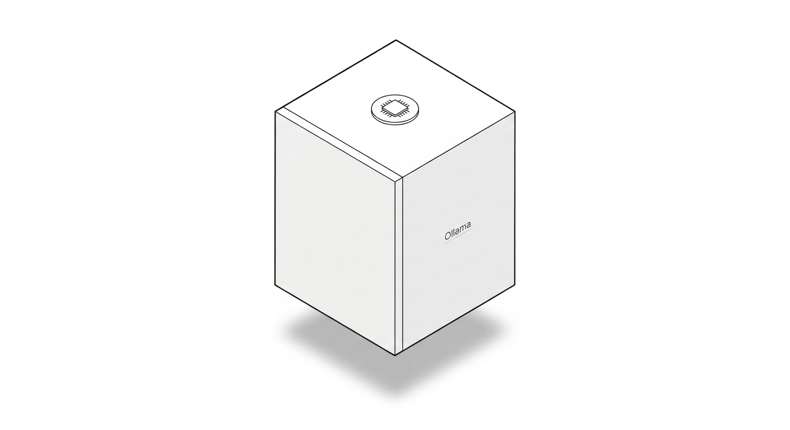
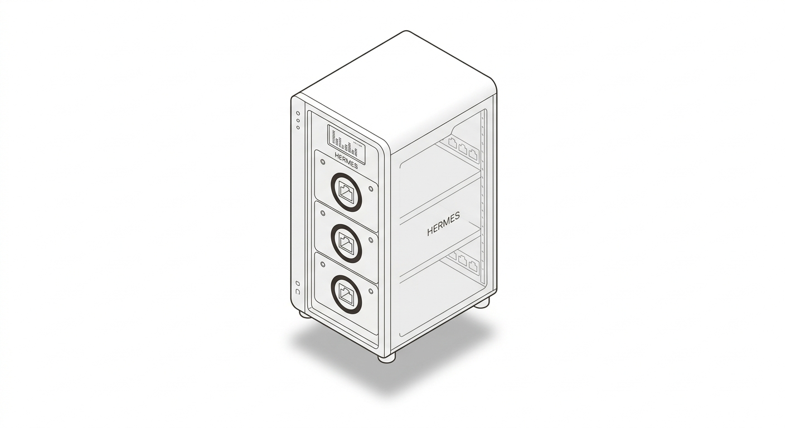
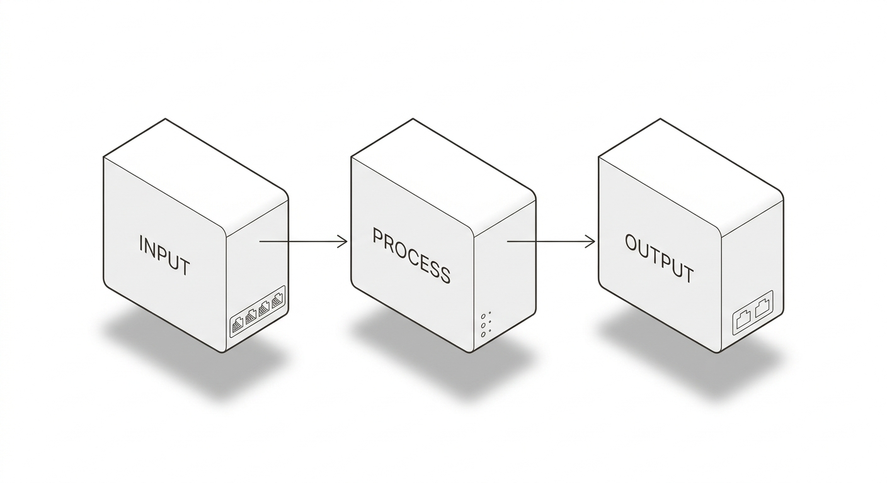
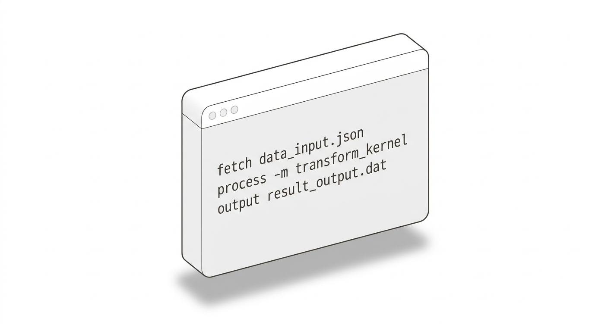
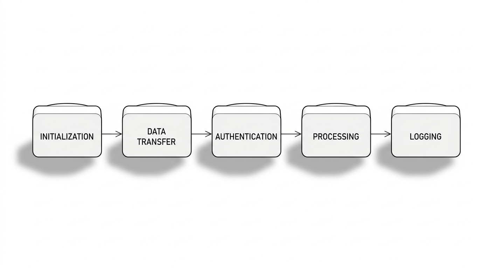

De la conception d'un assistant intégré à QGIS qui articule un
modèle de langage local, à la création d'un RAG documentaire et des
outils spatiaux déterministes — pour traduire une demande en langage
naturel en traitement SIG fiable, traçable et contrôlé. D'un assistant à un vrai collègue de travail, l'Intelligence Artificielle permet maintenant d'automatiser chaques étapes d'un projet géomatique.
Par Tristan VACHAUDEZ.
Un modèle de langage est un excellent planificateur, mais un piètre calculateur géométrique. L'architecture proposée confie l'intention au LLM et la rigueur à des outils déterministes, avec une validation qui bloque toute action non conforme avant exécution.
Le LLM interprète la demande en langage naturel, identifie l'intention, repère les ambiguïtés et propose un plan d'action structuré.
probabiliste · failliblePyQGIS, GDAL et PostGIS exécutent les opérations géométriques avec exactitude : tampons, intersections, reprojections, jointures.
exacte · reproductibleUne couche externe au LLM contrôle types, plages, CRS, emprises et droits avant toute exécution, et filtre les géométries invalides.
garde-fou · bloquant« Dans quelle mesure une architecture hybride associant un modèle de langage local, un système RAG fondé sur une documentation maîtrisée et des outils géomatiques déterministes permet-elle d'automatiser des traitements SIG formulés en langage naturel, tout en garantissant la validité spatiale, la traçabilité et le contrôle des opérations ? »
La validation déterministe des paramètres et des opérations réduit le nombre de traitements incorrects par rapport à une approche fondée sur le seul modèle de langage.
L'ajout d'un RAG fondé sur des sources vérifiées améliore la pertinence des méthodes proposées et la qualité des références fournies.
Le routage entre un modèle léger pour les opérations simples et un modèle plus performant pour les opérations complexes réduit le coût ou la latence sans dégrader excessivement le taux de réussite.
Le flux part de QGIS, traverse l'orchestrateur, mobilise le RAG et le modèle, puis revient par la couche d'outils — chaque étape étant validée avant l'exécution.
La demande et le contexte QGIS sont enregistrés (couches, emprise, CRS, droits).
L'orchestrateur normalise, identifie l'intention, détecte les ambiguïtés.
Le RAG recherche les passages pertinents (méthodes, règles, scripts).
Le modèle propose un plan structuré, séparé du texte libre.
Contrôle déterministe des paramètres, CRS, droits et intégrité.
Appel aux outils autorisés via PyQGIS, GDAL ou PostGIS, journalisé.
Résultat, statut, avertissements et sources renvoyés dans QGIS.
Quatre configurations testées sur un même corpus de tâches SIG, pour isoler l'apport de chaque couche de l'architecture — et vérifier H1, H2 et H3.
Fraction de tâches dont l'exécution respecte 100 % des contraintes et tolérances. Critère principal.
Probabilité qu'au moins une solution parmi k soit exacte. Adapté au code géospatial.
Précision × (1 − CV). Pénalise les modèles instables ; une valeur proche de 0 indique un comportement fiable.
Comparaison de référence avec tolérances numériques : superposition, aire, périmètre, topologie.
| Configuration | Contenu | Hypothèse |
|---|---|---|
| C0 | Modèle seul | référence |
| C1 | Modèle + RAG | H2 · ancrage |
| C2 | + outils déterministes + validations | H1 · fiabilité |
| C3 | Architecture complète + routage | H3 · efficacité |
Les benchmarks publiés documentent les agents géospatiaux ; ils ne valident pas encore le prototype. Cette distinction est essentielle.
Ces mécanismes fondent l'hypothèse H1 : une couche déterministe de validation peut intercepter les erreurs de planification et d'alignement avant l'exécution.
Le prototype n'a pas encore été évalué selon le protocole du chapitre 5. Les chiffres ci-dessus sont des résultats publiés, pas des résultats du système proposé. L'évaluation propre reste à mener.
La validation s'exécute indépendamment du LLM, au moment de l'exécution : vérification des types, plages, CRS, emprises et droits, avant tout appel au système hôte.
runtime gate · bloquantL'EU AI Act ne classe pas tous les outils à haut risque : l'analyse doit distinguer usage prévu, catégorie du système et obligations applicables au cas étudié.
AI Act · RGPDLes données spatiales encodent les dynamiques humaines ; le MAUP et les attaques par croisement imposent une vigilance sur la minimisation et la traçabilité.
ISO 19157 · OGCL'IA agentique n'efface pas le géomaticien : elle élève sa valeur ajoutée, de l'opérateur d'exécution vers le superviseur critique d'agents autonomes.
Huit chapitres : introduction, état de l'art, exigences, conception, méthodologie, résultats, discussion et conclusion. Les affirmations non vérifiables sont signalées pour être sourcées avant soutenance.
Recette d'établissement d'une équipe de géomaticiens autonomes : architecture serveur, runtime Hermes Agent, gouvernance déterministe et feuille de route opérationnelle.
VPS/Docker, port 8642, API Server et cloisonnement par session.
Hermes Agent · RuntimeArcPy, GDAL, PostGIS, Deep Learning, NLP spatial et mémoire procédurale agentskills.io.
GisAI · Skills HubMoindre privilège, garde-fous au runtime, Human-in-the-loop et journalisation immuable.
Consultez directement les 8 étapes de déploiement de l'inférence locale et du runtime Hermes Agent, directement depuis cette page.
Matériel, OS, Docker et CPU/GPU.

Intelligence Artificielle locale.
Quantification GGUF Q4_K_M et chargement VRAM.

L'agent autonome.

Trois endpoints et clés d'authentification.

Stabilité multi-utilisateurs et ressources.
Session Key et limitation des sorties.

Tests endpoints et intégration QGIS.